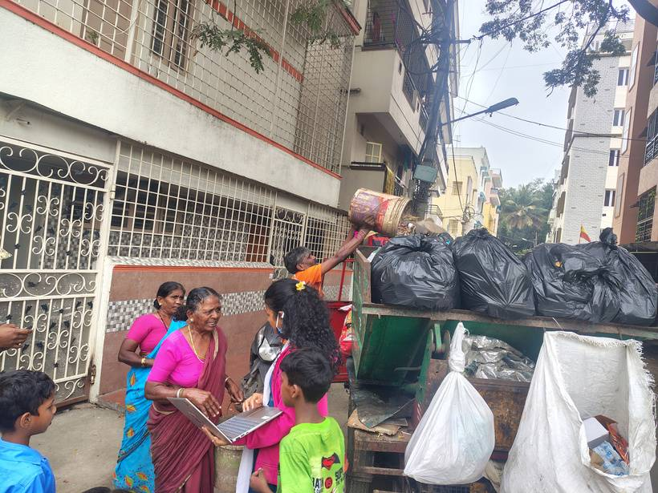
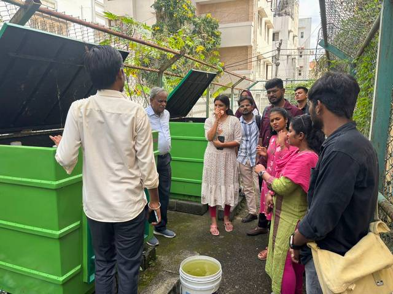

The starting point
KSRTC Colony is a low-income settlement of daily wage workers and migrant families. Waste was dumped on public roads, creating black spots, foul smells and disease risk. Collection was irregular and few households knew how to segregate.
What youth leadership made possible
With seven other youth leaders, Deekshitha went from feeling helpless to leading action: surveys, awareness, bins, clean-ups, murals, and close work with BBMP workers. Dumping fell and households began segregating.
What she did
Deekshitha surveyed households, went door to door on segregation, and ran community meetings to hear residents' concerns. She organised clean-up drives, planted black spots, and helped design wall paintings with messages on segregation and cleanliness that now serve as permanent reminders.
She distributed wet and dry bins to 36 households and followed up for 15 days to make sure waste was separated and collected. She coordinated with BBMP workers and local authorities, and at a closing event helped present results, gather feedback and hand over responsibilities so the work continues.
How she grew
Working alongside the Restless Development team, she learned structured documentation, reporting and presentation, and gained confidence in public speaking, negotiation and persuading residents and officials. She now sees herself as a changemaker who will keep working in the development sector.
“Before this project, we felt helpless about the waste problem. Now we know we can lead change in our own community.”Deekshitha, Youth Climate Leader